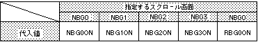

Return to previous page | Return to menu | Go to next page
slScrPosNbg0,1,2,3
void
Scroll function
Transparent display enable set
void slScrTransparent(flag)
Uint16 flag ;
flag Flag that specifies the transparency setting
Specify how to handle transparent color for each scroll.
Multiple scroll planes can be specified simultaneously by connecting parameters in the or format.
None
The following parameters can be specified for “flag”.
The scroll plane specified by the parameter draws the 0th character according to the data value, and the scroll plane not specified by the parameter treats the 0th character as transparent and executes drawing on the screen.

Note) The values in the above table are defined in “sl_def.h” included with the system.
Reference: Chapter 8 Scroll
slScrTransparent